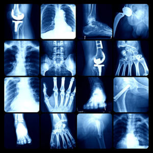

Orthopedic

Our Orthopedic Department provides specialized care for conditions affecting the bones, joints, ligaments, tendons, and muscles. We help patients recover from injuries, manage chronic pain, and regain mobility for an active lifestyle.
Common Orthopedic Conditions
- Fractures and dislocations
- Arthritis and joint pain
- Sports injuries
- Back and neck pain
- Osteoporosis
- Tendon and ligament injuries
Move with confidence: Our orthopedic specialists focus on restoring strength and flexibility through personalized treatment and rehabilitation.
Rehabilitation and Treatment
We offer physical therapy, pain management, and surgical referrals when necessary. Whether it’s a minor sprain or a major bone injury, we are committed to helping you recover safely and effectively.
When to See an Orthopedic Specialist
Visit us if you experience persistent joint pain, swelling, difficulty moving, or if you’ve sustained a bone or muscle injury. Early assessment helps prevent long-term complications.